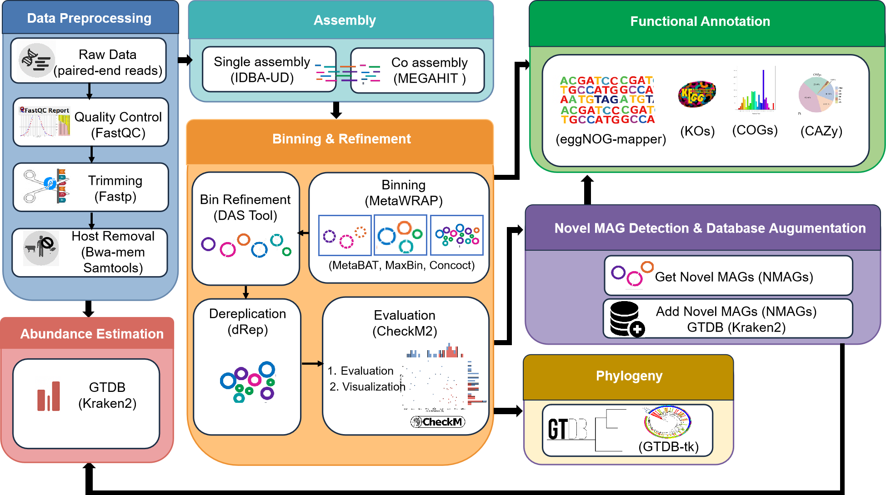

Introduction
MetaMAG Explorer is a comprehensive pipeline designed for the identification, processing, and analysis of Metagenome-Assembled Genomes (MAGs) from metagenomic data. This pipeline excels in detecting novel MAGs and integrating them into reference databases, with specialized handling for rumen microbiome data.
The pipeline incorporates state-of-the-art tools for quality control, assembly, binning, and functional annotation, providing a complete solution for metagenomic analysis from raw reads to functionally annotated genomes and phylogenetic placement.
Key Features:
- Comprehensive Processing: End-to-end workflow from raw reads to functionally annotated MAGs
- Novel MAG Detection: Specialized modules for identifying and processing novel genomes
- Rumen Data Support: Special handling for rumen microbiome data with reference MAG integration
- Database Integration: Automatic integration of novel MAGs into Kraken2 databases for future analyses
- High Performance: Optimized for HPC environments with SLURM integration
- Modular Design: Run specific steps independently or the entire pipeline
Pipeline Overview
MetaMAG Explorer is organized into several major modules that can be run sequentially or independently:
The pipeline consists of these main components:
- Data Preprocessing: Quality control, trimming, and host removal
- Assembly: Single-sample and co-assembly of metagenomic reads
- Binning & Refinement: MAG binning, refinement, dereplication, and evaluation
- Novel MAG Detection: Identification and processing of novel MAGs
- Functional Annotation: Annotation of MAGs with eggNOG, KEGG, and dbCAN
- Phylogeny: Construction and visualization of phylogenetic trees
- Abundance Estimation: Quantification of MAG abundance across samples
Novel MAG Detection & Database Augmentation
A unique feature of this pipeline is its comprehensive novel MAG detection and database integration module:

This specialized workflow identifies novel MAGs, dereplicates them against existing repositories, and integrates them into reference databases for improved future analyses.
Pipeline Steps in Detail
Data Preprocessing
Quality Control
The pipeline begins with quality assessment of raw sequencing reads using FastQC, which generates comprehensive reports on sequence quality, adapter content, and other metrics.
Trimming
Low-quality bases and adapter sequences are removed using Fastp. This step improves assembly quality by removing error-prone regions of reads.
Host Removal
For metagenomes from host-associated environments (e.g., rumen, human gut), the pipeline maps reads against host reference genomes using BWA-mem and removes host-derived sequences. This step is crucial for accurate microbial genome assembly.
Assembly
Single Sample Assembly
Individual samples are assembled using IDBA-UD, an iterative De Bruijn graph assembler optimized for uneven-depth metagenomic data. This approach works well for capturing dominant genomes in individual samples.
Co-Assembly
Reads from multiple samples are combined and assembled using MEGAHIT, which is memory-efficient and can handle large datasets. Co-assembly improves recovery of low-abundance genomes that may be present across multiple samples.
Assembly Evaluation
MetaQUAST is used to evaluate assembly quality metrics such as N50, total assembly length, and contig length distribution.
Binning & Refinement
Binning
The pipeline employs multiple binning algorithms to group contigs into putative genomes:
- MetaBAT2: Uses tetranucleotide frequencies and coverage information
- MaxBin2: Expectation-maximization algorithm for binning
- CONCOCT: Uses sequence composition and coverage across samples
Bin Refinement
Results from different binning tools are integrated using DAS Tool, which selects the optimal bins from each binning approach to create a non-redundant set of high-quality MAGs.
Dereplication
dRep is used to identify and remove redundant MAGs based on genome similarity, ensuring a non-redundant set of genomes for downstream analysis.
Evaluation
CheckM2 assesses MAG quality by estimating completeness and contamination based on single-copy marker genes. This quality assessment is crucial for identifying high-quality MAGs for further analysis.
Novel MAG Detection & Processing
GTDB-Tk Classification
GTDB-Tk assigns taxonomy to MAGs based on the Genome Taxonomy Database. This step is critical for identifying potentially novel genomes that lack species-level assignments.
Novel MAG Identification
MAGs with missing species-level assignments in GTDB-Tk results are identified as potentially novel. The pipeline extracts these candidates for further processing.
Dereplication Against MAG Repository
Novel MAG candidates are dereplicated against a repository of previously identified MAGs to ensure they represent truly unique genomes not already present in the database.
Rumen-Specific Processing
For rumen data, additional dereplication is performed against dedicated rumen reference MAGs. This ensures that MAGs unique to the rumen microbiome are properly identified and processed.
MAG Repository Update
Verified novel MAGs are added to a central MAG repository for future reference and dereplication.
Kraken Database Integration
The pipeline integrates novel MAGs into a Kraken2 database for improved metagenomic classification in future analyses. This step includes:
- Assigning placeholder taxonomy to MAGs with incomplete classifications
- Converting GTDB taxonomy to NCBI taxdump format
- Reformatting sequence headers for Kraken2 compatibility
- Building the Kraken2 database
Functional Annotation
eggNOG Annotation
MAGs are functionally annotated using eggNOG-mapper, which assigns orthology groups, KEGG orthology (KO) terms, and Gene Ontology (GO) terms to predicted genes.
CAZyme Annotation
The dbCAN tool is used to identify Carbohydrate-Active Enzymes (CAZymes) in MAGs, which are particularly important for understanding polysaccharide metabolism in the rumen microbiome.
Functional Analysis
KEGG annotations are analyzed to identify key metabolic pathways and functions present in the MAGs, providing insights into their ecological roles.
Phylogeny
Phylogenetic Tree Construction
Phylogenetic trees are constructed based on marker genes to establish evolutionary relationships among the MAGs and reference genomes.
Tree Visualization
Trees are visualized with taxonomic and functional annotations to facilitate interpretation of evolutionary relationships and functional traits.
Abundance Estimation
Kraken2-Based Quantification
The updated Kraken2 database, which includes novel MAGs, is used to estimate the abundance of MAGs across samples, providing insights into community composition and dynamics.
Special Features
Rumen MAGs Processing
The pipeline includes specialized handling for rumen microbiome data:
Rumen-Specific Workflow:
- Reference MAG Download: Automatically downloads reference MAGs from key rumen microbiome projects (RUG, RMGMC, MGnify)
- Rumen MAG Dereplication: Dereplicates rumen-specific MAGs to create a non-redundant reference set
- Rumen-Specific Novel MAG Detection: Identifies MAGs that are novel compared to existing rumen reference genomes
- Rumen Reference Integration: Updates rumen reference MAG collections with newly identified genomes
This specialized handling improves the characterization of the rumen microbiome, which is crucial for understanding feed efficiency, methane emissions, and overall cattle health.
Kraken Database Integration
The pipeline's Kraken database integration module enables continuous improvement of metagenomic classification:
Key Features:
- Automatic Taxonomy Assignment: Uses GTDB-Tk results and implements placeholder taxonomy for incomplete classifications
- Taxonomy Format Conversion: Converts GTDB taxonomy to NCBI taxdump format required by Kraken2
- Header Formatting: Ensures sequence headers contain taxonomy IDs in Kraken2-compatible format
- Database Building: Automates the process of adding sequences to the Kraken2 library and building the database
This integration enables improved classification of metagenomic sequences in future analyses by incorporating project-specific novel genomes into the reference database.
Output Files
The pipeline generates a structured output directory containing the following key files and directories:
output_dir/
+-- QC/ # Quality control reports
+-- Trimming/ # Trimmed read files
+-- Host_Removal/ # Host-filtered read files
+-- Assembly/
¦ +-- IDBA/ # Single-sample assemblies
¦ +-- MEGAHIT/ # Co-assemblies
+-- MetaQUAST/ # Assembly quality evaluation
+-- Binning/ # Raw binning results
+-- Bin_Refinement/ # Refined bins
¦ +-- drep/ # Dereplicated MAGs
+-- Evaluation/ # CheckM2 quality assessment
+-- Novel_Mags/
¦ +-- gtdbtk/ # GTDB-Tk classification results
¦ +-- UniqueMags/ # Candidate novel MAGs
¦ +-- filtered_NMAGs/ # MAGs after repository dereplication
¦ +-- true_novel_MAGs/ # Final set of novel MAGs
+-- MAGs_Repository/ # Central repository of all MAGs
+-- Kraken_Database/ # Kraken2 database with novel MAGs
+-- Functional_Annotation/
¦ +-- eggNOG/ # eggNOG annotation results
¦ +-- dbCAN/ # CAZyme annotations
¦ +-- KEGG/ # KEGG functional analysis
+-- Phylogeny/ # Phylogenetic trees
+-- Abundance/ # MAG abundance estimatesStart Using the MetaMAG Pipeline
Follow the installation steps and run the pipeline to process your metagenomic data from raw reads to annotated genomes. You can run all steps or just the parts you need.
Frequently Asked Questions
Q: What types of metagenomic data can be processed with this pipeline?
A: MetaMAG Explorer can process shotgun metagenomic data from any environment, with specialized features for host-associated microbiomes, particularly the rumen microbiome.
Q: Can I use long-read sequencing data (PacBio/Nanopore)?
A: The current pipeline is designed for short-read Illumina data. Long reads would require different assemblers (like metaFlye or Canu) and modified quality control steps.
Q: How does the pipeline define "novel" MAGs?
A: MAGs are considered potentially novel if they lack a species-level classification in GTDB-Tk results (indicated by "s__" in the taxonomy string). They are confirmed as novel if they pass dereplication against existing MAG repositories.
Q: What reference MAG collections are used for rumen data?
A: The pipeline can incorporate MAGs from major rumen microbiome projects including RUG (Rumen Uncultured Genomes), RMGMC (Rumen Microbial Genomics Multi-Country), and MGnify rumen MAGs.
Q: How does rumen-specific processing differ from standard processing?
A: Rumen-specific processing includes additional dereplication against established rumen reference MAGs and maintains a separate collection of rumen-specific novel MAGs for future reference.
Q: Can I use the pipeline for other host-associated microbiomes?
A: Yes, the pipeline can be adapted for other host-associated microbiomes by providing the appropriate host reference genome for host removal and reference MAG collections for dereplication.
Q: What computational resources are required?
A: Resource requirements vary by step and dataset size. As a general guideline:
- Assembly: 100-200 GB RAM for co-assembly of multiple samples
- Binning: 32-64 GB RAM
- GTDB-Tk: 100-200 GB RAM
- Storage: 1-5 TB for a typical project with 20-50 samples
Q: How can I speed up the pipeline?
A: Running steps in parallel, using more CPU cores, and allocating sufficient memory will reduce runtime.
Q: Can I adjust resources for individual steps?
A: Yes, resource requirements (CPU, memory, time) can be customized per step in the configuration file or SLURM job submission script.
Q: Can failed jobs be restarted without repeating everything?
A:Yes, the pipeline supports checkpointing and modular execution, so failed steps can be rerun independently.
Q: Does running on multiple nodes improve performance?
A:Yes, the pipeline is designed for HPC environments and can distribute tasks across multiple nodes for efficiency.
Troubleshooting
Common Issues and Solutions
SLURM Job Failures
Issue: Jobs fail with out-of-memory errors.
Solution: Increase the memory allocation in the --memory parameter or reduce the batch size.
GTDB-Tk Classification Errors
Issue: GTDB-Tk fails with database-related errors.
Solution: Ensure the GTDB-Tk database is properly installed and the environment variable GTDBTK_DATA_PATH is set correctly.
dRep Failures
Issue: dRep fails during genome comparison.
Solution: Check if input MAGs meet minimum quality requirements (completeness > 50%, contamination < 10%). Increase memory allocation for dRep.
Kraken Database Build Failures
Issue: Kraken database building fails.
Solution: Ensure sufficient disk space for the database. Check if the taxonomy files (nodes.dmp, names.dmp) are properly formatted.
For additional troubleshooting and support, please open an issue in the GitHub repository or contact the developers directly.
Complete List of Tools and Software Used
Quality Control & Preprocessing
- FastQC: Andrews, S. (2010). FastQC: A quality control tool for high throughput sequence data. Babraham Bioinformatics. Available at: https://www.bioinformatics.babraham.ac.uk/projects/fastqc/
- fastp: Chen, S., Zhou, Y., Chen, Y., & Gu, J. (2018). fastp: an ultra-fast all-in-one FASTQ preprocessor. Bioinformatics, 34(17), i884-i890. https://doi.org/10.1093/bioinformatics/bty560
- BWA-MEM: Li, H. (2013). Aligning sequence reads, clone sequences and assembly contigs with BWA-MEM. arXiv preprint, arXiv:1303.3997.
- SAMtools: Li, H., Handsaker, B., Wysoker, A., et al. (2009). The Sequence Alignment/Map format and SAMtools. Bioinformatics, 25(16), 2078-2079. https://doi.org/10.1093/bioinformatics/btp352
Assembly Tools
- IDBA-UD: Peng, Y., Leung, H. C. M., Yiu, S. M., & Chin, F. Y. L. (2012). IDBA-UD: a de novo assembler for single-cell and metagenomic sequencing data with highly uneven depth. Bioinformatics, 28(11), 1420-1428. https://doi.org/10.1093/bioinformatics/bts174
- MEGAHIT: Li, D., Liu, C. M., Luo, R., Sadakane, K., & Lam, T. W. (2015). MEGAHIT: an ultra-fast single-node solution for large and complex metagenomics assembly via succinct de Bruijn graph. Bioinformatics, 31(10), 1674-1676. https://doi.org/10.1093/bioinformatics/btv033
- MetaQUAST: Mikheenko, A., Saveliev, V., & Gurevich, A. (2016). MetaQUAST: evaluation of metagenome assemblies. Bioinformatics, 32(7), 1088-1090. https://doi.org/10.1093/bioinformatics/btv697
Binning & Refinement
- MetaWRAP: Uritskiy, G. V., DiRuggiero, J., & Taylor, J. (2018). MetaWRAP-a flexible pipeline for genome-resolved metagenomic data analysis. Microbiome, 6, 158. https://doi.org/10.1186/s40168-018-0541-1
- MetaBAT2: Kang, D. D., Li, F., Kirton, E., et al. (2019). MetaBAT 2: an adaptive binning algorithm for robust and efficient genome reconstruction from metagenome assemblies. PeerJ, 7, e7359. https://doi.org/10.7717/peerj.7359
- MaxBin2: Wu, Y. W., Simmons, B. A., & Singer, S. W. (2016). MaxBin 2.0: an automated binning algorithm to recover genomes from multiple metagenomic datasets. Bioinformatics, 32(4), 605-607. https://doi.org/10.1093/bioinformatics/btv638
- CONCOCT: Alneberg, J., Bjarnason, B. S., de Bruijn, I., et al. (2014). Binning metagenomic contigs by coverage and composition. Nature Methods, 11, 1144-1146. https://doi.org/10.1038/nmeth.3103
- DAS Tool: Sieber, C. M. K., Probst, A. J., Sharrar, A., et al. (2018). Recovery of genomes from metagenomes via a dereplication, aggregation and scoring strategy. Nature Microbiology, 3, 836-843. https://doi.org/10.1038/s41564-018-0171-1
Quality Assessment & Dereplication
- dRep: Olm, M. R., Brown, C. T., Brooks, B., & Banfield, J. F. (2017). dRep: a tool for fast and accurate genomic comparisons that enables improved genome recovery from metagenomes through de-replication. ISME Journal, 11, 2864-2868. https://doi.org/10.1038/ismej.2017.126
- CheckM2: Chklovski, A., Parks, D. H., Woodcroft, B. J., Tyson, G. W., & Hugenholtz, P. (2023). CheckM2: assessing quality of metagenome-assembled genomes using machine learning. Nature Biotechnology. https://doi.org/10.1038/s41587-023-01782-8
- fastANI: Jain, C., Rodriguez-R, L. M., Phillippy, A. M., Konstantinidis, K. T., & Aluru, S. (2018). High throughput ANI analysis of 90K prokaryotic genomes reveals clear species boundaries. Nature Communications, 9, 5114. https://doi.org/10.1038/s41467-018-07641-9
Taxonomic Classification
- GTDB-Tk: Chaumeil, P. A., Parks, D. H., Rinke, C., & Hugenholtz, P. (2019). GTDB-Tk: A toolkit to classify genomes with the Genome Taxonomy Database. Bioinformatics, 36(6), 1925-1927. https://doi.org/10.1093/bioinformatics/btz848
- Kraken2: Wood, D. E., Lu, J., & Langmead, B. (2019). Improved metagenomic analysis with Kraken 2. Genome Biology, 20, 257. https://doi.org/10.1186/s13059-019-1891-0
- Bracken: Lu, J., Breitwieser, F. P., Thielen, P., & Salzberg, S. L. (2017). Bracken: estimating species abundance in metagenomic data. PeerJ Computer Science, 3, e104. https://doi.org/10.7717/peerj-cs.104
Functional Annotation
- Prodigal: Hyatt, D., Chen, G. L., LoCascio, P. F., Land, M. L., Larimer, F. W., & Hauser, L. J. (2010). Prodigal: prokaryotic gene recognition and translation initiation site identification. BMC Bioinformatics, 11, 119. https://doi.org/10.1186/1471-2105-11-119
- eggNOG-mapper: Cantalapiedra, C. P., Hernandez-Plaza, A., Letunic, I., Bork, P., & Huerta-Cepas, J. (2021). eggNOG-mapper v2: Functional annotation, orthology assignments, and domain prediction at the metagenomic scale. Molecular Biology and Evolution, 38(12), 5825-5829. https://doi.org/10.1093/molbev/msab293
- dbCAN3: Zheng, J., Ge, Q., Yan, Y., Zhang, X., Huang, L., & Yin, Y. (2023). dbCAN3: automated carbohydrate-active enzyme and substrate annotation. Nucleic Acids Research, 51(W1), W115-W121. https://doi.org/10.1093/nar/gkad328
- HMMER: Used with dbCAN for HMM-based searches (integrated within dbCAN3)
- DIAMOND: Used with eggNOG-mapper and dbCAN for fast sequence alignment
Visualization & Analysis
- matplotlib: Hunter, J. D. (2007). Matplotlib: A 2D graphics environment. Computing in Science & Engineering, 9(3), 90-95. https://doi.org/10.1109/MCSE.2007.55
- seaborn: Waskom, M. L. (2021). seaborn: statistical data visualization. Journal of Open Source Software, 6(60), 3021. https://doi.org/10.21105/joss.03021
- plotly: Plotly Technologies Inc. (2015). Collaborative data science. Montreal, QC. Available at: https://plot.ly
- NetworkX: Hagberg, A. A., Schult, D. A., & Swart, P. J. (2008). Exploring network structure, dynamics, and function using NetworkX. In Proceedings of the 7th Python in Science Conference (SciPy 2008), 11-15.
- ape (R): Paradis, E., Claude, J., & Strimmer, K. (2004). APE: Analyses of Phylogenetics and Evolution in R language. Bioinformatics, 20(2), 289-290. https://doi.org/10.1093/bioinformatics/btg412
- RColorBrewer (R): Neuwirth, E. (2022). RColorBrewer: ColorBrewer Palettes. R package version 1.1-3. Available at: https://cran.r-project.org/package=RColorBrewer
- ggtree (R): Yu, G., Smith, D. K., Zhu, H., Guan, Y., & Lam, T. T.-Y. (2017). ggtree: an R package for visualization and annotation of phylogenetic trees with their covariates and other associated data. Methods in Ecology and Evolution, 8(1), 28-36. https://doi.org/10.1111/2041-210X.12628
- ggplot2 (R): Wickham H. (2016). ggplot2: Elegant Graphics for Data Analysis. Springer-Verlag New York. ISBN 978-3-319-24277-4, https://ggplot2.tidyverse.org
Data Retrieval
- SRA Toolkit: Leinonen, R., Sugawara, H., Shumway, M., & International Nucleotide Sequence Database Collaboration. (2011). The Sequence Read Archive. Nucleic Acids Research, 39(Database issue), D19-D21. https://doi.org/10.1093/nar/gkq1019
Other Mentioned Pipelines (for comparison)
- SqueezeMeta: Tamames, J. & Puente-Sanchez, F. (2019). SqueezeMeta, a highly portable, fully automatic metagenomic analysis pipeline from reads to bins. Frontiers in Microbiology, 9, 3349. https://doi.org/10.3389/fmicb.2018.03349
- ATLAS: Kieser, S., Brown, J., Zdobnov, E. M., Trajkovski, M., & McCue, L. A. (2020). ATLAS: a Snakemake workflow for assembly, annotation, and genomic binning of metagenome sequence data. BMC Bioinformatics, 21, 257. https://doi.org/10.1186/s12859-020-03585-4
- METABOLIC: Zhou, Z., Tran, P. Q., Breister, A. M., et al. (2022). METABOLIC: high-throughput profiling of microbial genomes for functional traits, metabolism, biogeochemistry, and community-scale functional networks. Microbiome, 10, 33. https://doi.org/10.1186/s40168-021-01213-8
- EasyMetagenome: Bai, D., et al. (2025). EasyMetagenome: A user-friendly and flexible pipeline for shotgun metagenomic analysis in microbiome research. iMeta, 4(1), e70001. https://doi.org/10.1002/imt2.70001